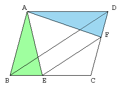

| ABCD is a parallelogram. The line segment EF is parallel to BD. Prove the area of the triangle ABE is equal to the area of the triangle ADF. |  |
How to use this appletDrag three vertices of the triangle (red points).The area is unchanged during the motion. Transform the triangle ABE to the triangle ADF. |